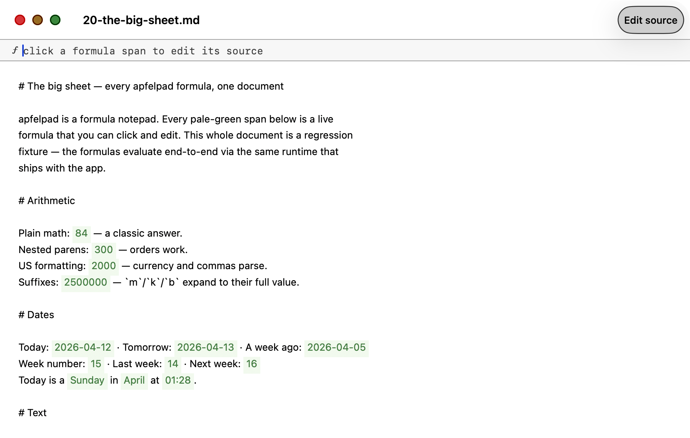
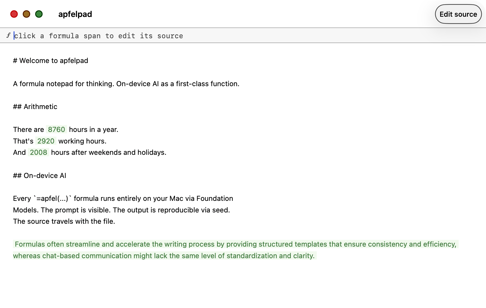
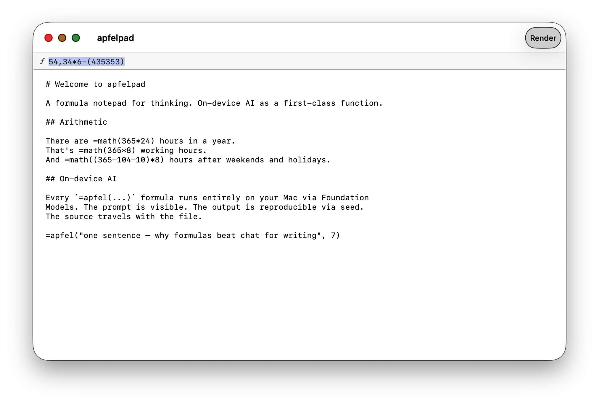
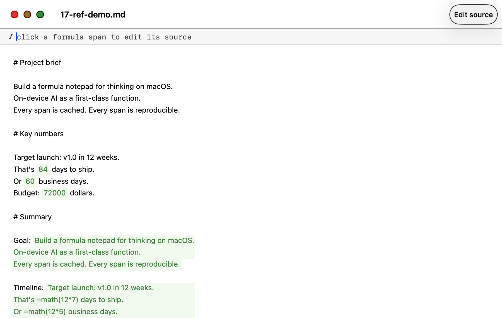
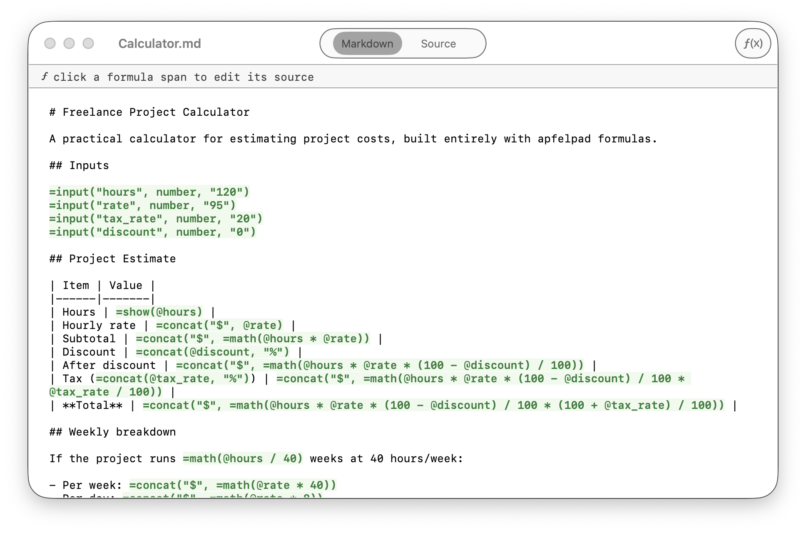

Type =apfel("summarize this") in your markdown. Watch it stream inline. No API keys. No cloud.


=math(365*24) becomes 8760. =apfel() calls stream AI text. Both render as green spans.

Toggle to see raw markdown. Formula syntax is plain text. Open in any editor.
Headings, bold, lists — it all renders inline.
=apfel(summarize this) or =math(365*24) anywhere in your text.
Pale green spans. Cached. Reproducible via seeds.
Every formula is pure. Every result is cached. Type =name(args) anywhere. Smart quotes, anonymous shortcuts, and auto-quoting all work. Formulas compose.
apfel --serve. Seed makes output reproducible.=(hello) canonicalises to =apfel("hello").=math($1,250 + $750), =math(2m + 500k).=date(+4) four days ahead, =date(-7) a week ago.=cw(-1) last week, =cw(+2) two ahead.HH:mm time.=upper("hello") → HELLO=lower("HELLO") → hello=len("🎉") → 1@# = section reference.@name elsewhere to bind its value.Name a heading, then quote its section with =ref(@#name). When you edit the source heading, every =ref that points at it updates automatically. Use @# for section references, @ for input variables.
# Project brief
Build a formula notepad for thinking on macOS.
On-device AI as a first-class function.
Every span is cached. Every span is reproducible.
# Key numbers
Target launch: v1.0 in 12 weeks.
That's =math(12*7) days to ship.
Or =math(12*5) business days.
Budget: =math(40*12*150) dollars.
# Summary
Goal: =ref(@#project-brief)
Timeline: =ref(@#key-numbers)
Anchor names are slugified: # Project brief becomes @project-brief. Case-insensitive. Subsections scope correctly to the next heading of equal or higher level.
Every formula can take another formula as an argument. The resolver walks the source bottom-up, substitutes each sub-call's evaluated result as a quoted literal, then runs the outer call. Combined with =if branching and =ref document lookup, this is enough to express any computable function.
=upper(=ref(@#intro))
→ upper + ref
→ HELLO WORLD
=upper(=trim(=lower(" HELLO ")))
→ three levels deep
→ HELLO
=concat(=upper("a"), "-", =lower("B"))
→ siblings
→ A-b=if(=math(5*5), "big", "small")
→ 25 is truthy
→ big
=sum(=len("abc"), =len("de"), =math(10))
→ 3 + 2 + 10
→ 15
=apfel(=concat("summarize: ", =ref(@#intro)))
→ AI reads the intro sectionDepth is capped at 10 levels so pathological nesting always terminates. Invalid sub-calls are left in place and surfaced as errors in the outer parse.
This is a regression fixture that ships with apfelpad. Every pale-green span is a live formula — math with US annotation, dates, weekdays, text transforms, aggregates, document references, nested composition. The screenshot is window-only and captured directly from the running .app by scripts/screenshot-big-sheet.sh.
Source: Tests/Fixtures/20-the-big-sheet.md · Full reference: docs/formulas.md
=input(name, type) declares a document-level variable. =show(@name) echoes it. Any formula that references @name recomputes in real time when the value changes. Spreadsheet semantics, inside prose.

# Freelance Project Calculator
=input("hours", number, "120")
=input("rate", number, "95")
=input("tax_rate", number, "20")
=input("discount", number, "0")
## Project Estimate
| Item | Value |
|------|-------|
| Hours | =show(@hours) |
| Subtotal | =concat("$", =math(@hours * @rate)) |
| Discount | =concat(@discount, "%") |
| After discount | =concat("$", =math(@hours * @rate * (100 - @discount) / 100)) |
| Tax | =concat("$", =math(@hours * @rate * @tax_rate / 100)) |
| **Total** | =concat("$", =math(@hours * @rate * (100 + @tax_rate) / 100)) |
## Document stats
This document has =count() words.=input span renders as an inline form field (text, number, boolean, or date)=show echoes@name = input variable, @#section = heading reference — clean separation=count() counts words in the whole document; =count(@#section) counts a specific section=clip() snapshots the clipboard; =file(path) reads a local text fileExample: Examples/Calculator.md
Free. Signed and notarised. Apple Silicon only.
Unzip, drag to Applications, open.
Download free (arm64)Signed and notarised. SHA-256 in each release.
=math(2+2) and press Returnbrew install Arthur-Ficial/tap/apfelpad
Updates with brew upgrade apfelpad.
curl -fsSL https://raw.githubusercontent.com/Arthur-Ficial/apfelpad/main/scripts/install.sh | zsh
git clone https://github.com/Arthur-Ficial/apfelpad.git cd apfelpad && make install
Results appear right where you type. No output pane.
No API keys. No cloud. Nothing leaves your Mac.
=apfel("prompt", 42) gives the same output every time.
Re-opening shows results instantly. Change the prompt to re-evaluate.
Type =apfel(hello world). The parser adds the quotes.
.md files on disk. Open in any editor.
=math() works without AI. Only =apfel() formulas need the on-device model.
Optional update check via api.github.com (togglable in settings). Every AI call goes to localhost. No telemetry. No accounts. No cloud inference. Ever.
MIT-licensed. Use it, fork it, ship it.